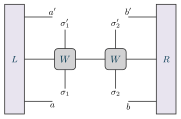

Examples / 14
Two-site effective Hamiltonian

The two-site effective Hamiltonian: the operator two-site DMRG hands its eigensolver at each step of a sweep (and two-site TDVP exponentiates).
It is the fixed point's left-hand side with the state removed. Take L from 07 – the tall tensor carrying one index into each layer and one into the Hamiltonian – take A and its conjugate out of the column, and what is left is L with its bra and ket indices free. Put that on the left, its mirror on the right, the two MPO tensors of the sites being optimised between them, and the picture is H_eff.
It is a stack of three layers, two sites wide, with an environment at either end, and only the operator layer filled. The ket and bra layers are left empty on purpose: drawing Theta in would make this a picture of one application rather than of the operator. Every free index ends at the border the absent tensor would have – the environments' at the edge of the first and last slot, the MPO's at the near edge of the slot above and below – which is the only way the gap is a gap and not just white space, and none of those ends is written down: the slots say where they are.
The picture
\begin{tikzpicture} \tnstack[left=$L$, right=$R$]{H}{2}{ket, op, bra} \tnlayer{H}{op}{2*mpo/$W$} \tnconnect{H} \tnopen[label=$\sigma_{#1}'$]{up}{H-op-1, H-op-2} \tnopen[label=$\sigma_{#1}$]{down}{H-op-1, H-op-2} \tnput[above]{H-ket-left}{$a'$} \tnput[above]{H-ket-right}{$b'$} \tnput[below]{H-bra-left}{$a$} \tnput[below]{H-bra-right}{$b$} \end{tikzpicture}
The whole file
\documentclass[border=4pt]{standalone} \usepackage{amsmath,amssymb} \usepackage{tikz-tensors} \input{notation} \begin{document} \begin{tikzpicture} \tnstack[left=$L$, right=$R$]{H}{2}{ket, op, bra} \tnlayer{H}{op}{2*mpo/$W$} \tnconnect{H} \tnopen[label=$\sigma_{#1}'$]{up}{H-op-1, H-op-2} \tnopen[label=$\sigma_{#1}$]{down}{H-op-1, H-op-2} \tnput[above]{H-ket-left}{$a'$} \tnput[above]{H-ket-right}{$b'$} \tnput[below]{H-bra-left}{$a$} \tnput[below]{H-bra-right}{$b$} \end{tikzpicture} \end{document}